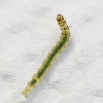
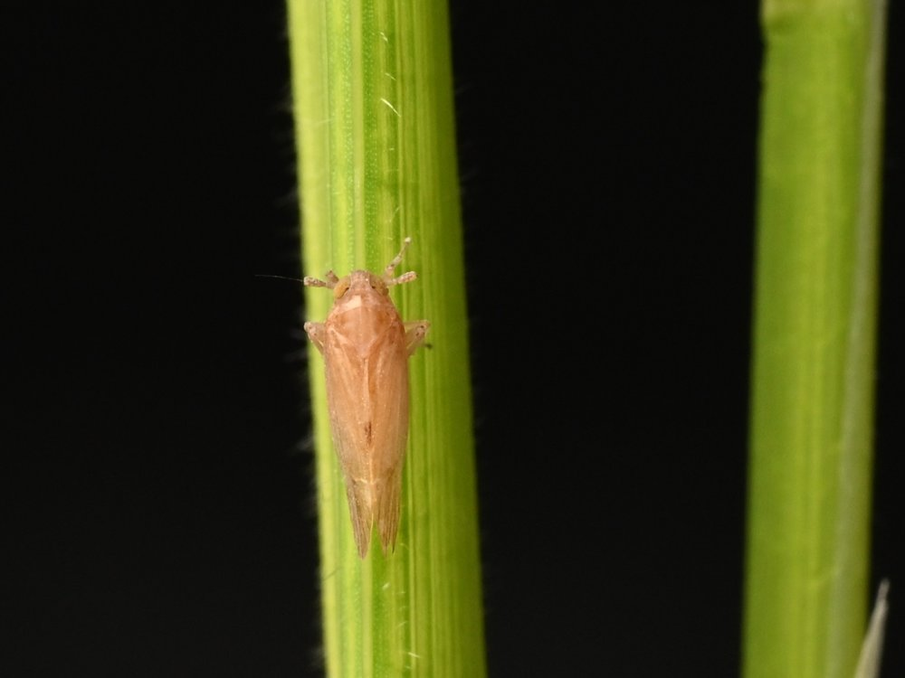
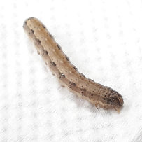
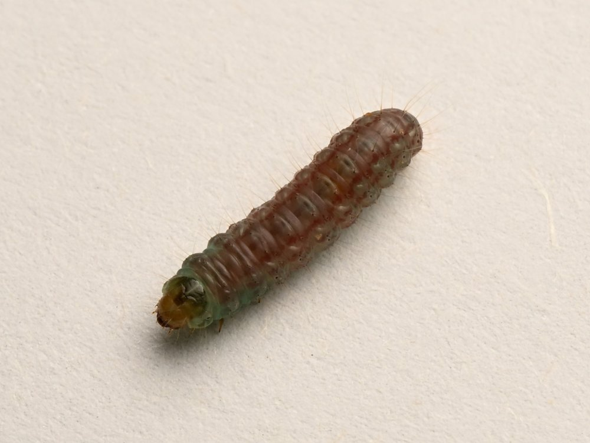

我們研究作物如何感知、回應並抵禦昆蟲取食，並將這些天然防禦轉化為現代農業的永續害蟲管理策略。
害蟲至今仍是全球糧食生產的重大威脅。氣候變遷、集約化耕作與長期依賴化學殺蟲劑，加速了昆蟲的適應演化，危及作物產量與糧食安全。善用作物本身的抗蟲機制，是持久且環境友善的解決之道。
我們以水稻、玉米與豆類作物及其重要害蟲（褐飛蝨、秋行軍蟲、瘤野螟與豆莢斑螟）為研究系統，從分子、生理、生態與演化等層次探討植物與昆蟲的交互作用，串聯基礎科學與害蟲管理的實務應用。
研究主題
寄主植物抗蟲機制
解析非偏好性（antixenosis）與抗生性（antibiosis）等抗蟲性狀，及其對昆蟲行為、發育與存活的影響。
植物與昆蟲的交互作用
探討昆蟲取食如何改變植物的生理、代謝與基因表現，以及植物訊號網絡如何整合這些反應。
重要農業害蟲的抗性
以水稻褐飛蝨與玉米秋行軍蟲等重要害蟲為系統，於實驗室與田間評估抗蟲種原。
害蟲綜合管理與永續農業
整合寄主抗性與生態、農藝管理措施，減少農藥使用，提升農業生態系的韌性。
研究系統
我們以水稻、玉米與豆類作物的重要害蟲為主要研究對象。




研究願景
透過闡明作物抵抗害蟲的機制，我們期望推進植物防禦生物學的基礎知識，同時為作物改良與永續害蟲管理提供實用的見解。